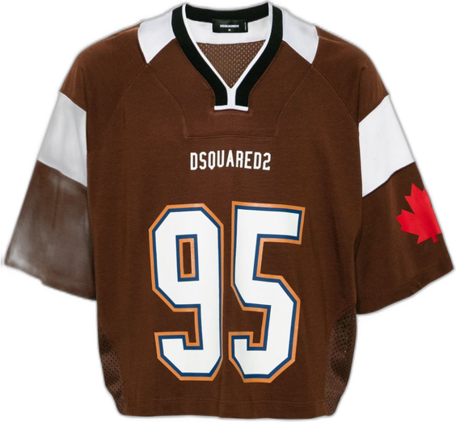

Il camerino che hai in casa.
Fotografa i vestiti che possiedi. Vesta li ricostruisce come immagini di catalogo, li cataloga da sola e te li fa provare addosso, sulla tua foto.


MontaggioDalla foto sul telefono alla scheda di catalogo.
Il passaggio che cambia tutto non è cancellare lo sfondo: è ricostruire il capo. Un modello lo ridisegna come foto prodotto su un fondo pieno, che poi diventa trasparenza vera. Così spariscono il corpo, le pieghe da indosso e le ombre.
Carichi fino a dodici foto, anche quelle in cui sei vestito.
Un modello elenca i capi visibili con colore, tessuto, taglio, e ciò che non si vede.
Ogni capo viene ridisegnato su fondo pieno e scontornato con bordo morbido.
Componi il look e lo sviluppi sulla tua figura.
Non solo la prova.
La tua stagione
Dalla foto stima il sottotono della pelle in CIELAB e ne ricava la palette e i capi che ti stanno bene.
Catalogato da solo
Categoria, colore dominante e materiale vengono assegnati durante l'importazione. I doppioni vengono segnalati, mai cancellati.
Prima guardi, poi generi
Comporre un look è immediato e gratuito. Il modello parte solo quando lo chiedi tu.
Tre modi di generare.
Si sceglie in base a cosa serve: riservatezza, costo zero, o qualità massima.
| Motore | Dove gira | Tempo | Costo per immagine |
|---|---|---|---|
| Locale | Sul tuo Mac, Apple Silicon | ~90 s | 0 |
| Cloud | GPU gratuita, quota limitata | ~25 s | 0 |
| Premium | OpenAI o Google, con la tua chiave | ~15 s | 0,04–0,25 $ |
In locale e in cloud i capi restano sul tuo computer. In premium la foto viene inviata al provider che scegli: sta scritto nell'app, sotto il pulsante, ogni volta.
Serve un Mac con Apple Silicon.
Il primo avvio scarica i modelli, circa quattro gigabyte. Dopo funziona anche senza rete, in locale.
git clone https://github.com/nerln/vesta cd vesta/backend python3.11 -m venv .venv .venv/bin/pip install -r ../requirements.txt git clone https://github.com/Zheng-Chong/CatVTON .venv/bin/python download_weights.py .venv/bin/python -m uvicorn server:app --host 0.0.0.0 --port 8770
Poi si apre sul Mac, oppure l'indirizzo del Mac dal telefono sulla stessa rete: da iPhone si aggiunge alla schermata Home e si comporta come un'app.